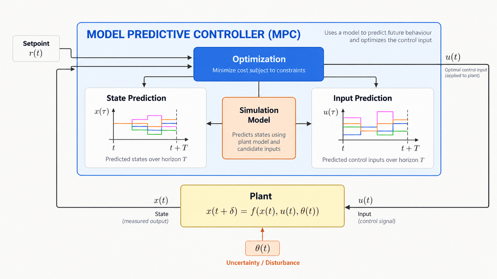

<!DOCTYPE html>
<html lang="en">
  <head>
    <meta charset="utf-8" />
    <meta name="viewport" content="width=device-width, initial-scale=1" />
    <title>MPC Heater Lab</title>
    <link rel="stylesheet" href="css/lab.css" />
  </head>
  <body>
    <div class="shell" id="shell"></div>
    <script type="module">
      import { mountNav } from "./js/nav.js";
      document.getElementById("shell").innerHTML = `
        ${mountNav("overview")}
        <main class="main">
          <h1>MPC Heater Lab</h1>
          <p class="lede">Compare MPC and PID on the same heater model.</p>
          
          <p class="lede" style="margin-top:20px">
            MPC runs a model forward over a horizon, picks a power plan that stays inside
            the limits, applies the first move, then re-plans from the measured temperature.
            PID only reacts to the error it sees now.
          </p>
          <div class="paths">
            <div class="path-item"><strong>Playground</strong><span>Set conditions and compare MPC with PID.</span></div>
            <div class="path-item"><strong>Step-through</strong><span>Watch MPC plan one horizon at a time.</span></div>
            <div class="path-item"><strong>Scorecard</strong><span>Compare settling, limit hits, and power use.</span></div>
          </div>
        </main>
      `;
    </script>
  </body>
</html>
